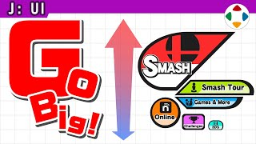
速览
樱井执导的菜单 UI 最与众不同之处：按重要度改变图标的大小。通常菜单多是从上到下排列，理所当然；而他从《Meteos》以后，多把菜单画面图标化，并改变其大小，用来表示哪个模式更优先、更重要：越大越常用，越小越不常用。为什么这样做，你大概能想象——是在引导玩家访问。GameCube 手柄也许是比较接近的思想：A 键大，X、Y 键小，不只是看起来，摸的时候也能清楚知道最低限度必须按哪个键。但它并不适合所有游戏：重要度因游戏而异；如果选项价值完全相同，反而会难操作，例如用四个按键上下左右移动菜单时；改变选项的价值，也意味着损失通用性。《大乱斗》的菜单是专用的，但也有相似之处。菜单图标化后还挺麻烦的：特别是翻译成其他语言时，长的语言文字可能会溢出——这是适合日语的版式，如果让各国的人为难了，抱歉。总之，这是介绍一种方法：相对于单纯列表式的菜单画面，还可以改变权重。
1. 按重要度改变大小 0:03
樱井执导的菜单 UI 最与众不同之处：按重要度改变图标大小。
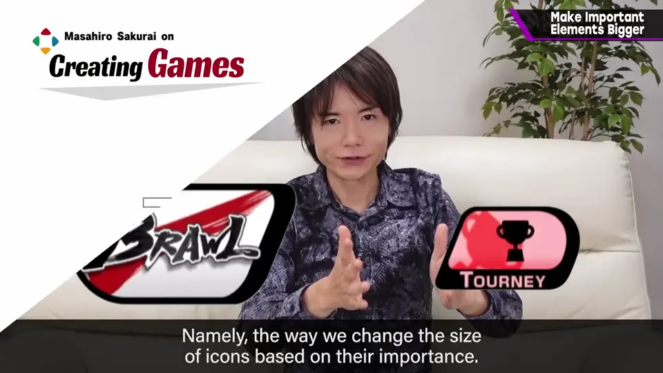
一般菜单多是从上到下排列；他从《Meteos》以后，多把菜单图标化并改变大小。
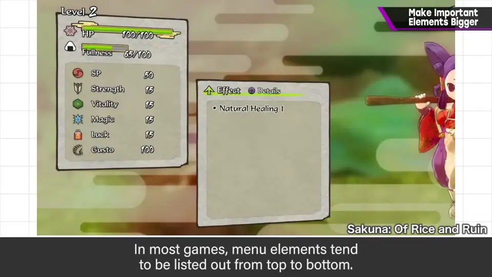
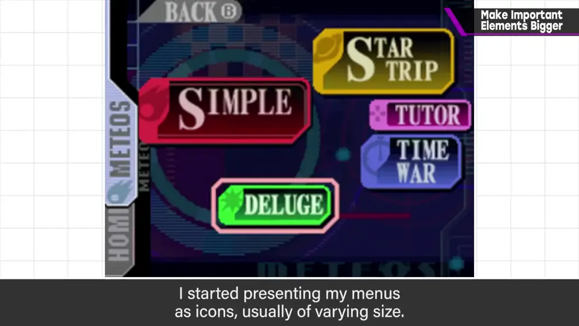
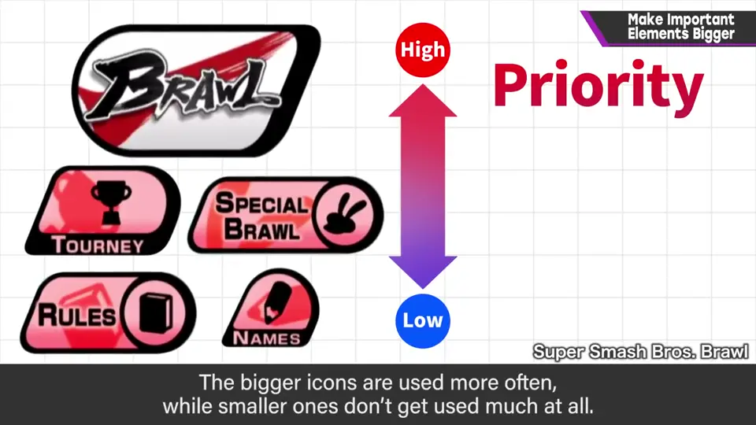
2. 与 GameCube 手柄相通 0:48
GameCube 手柄也许是相近的思想：A 键大，X、Y 键小。
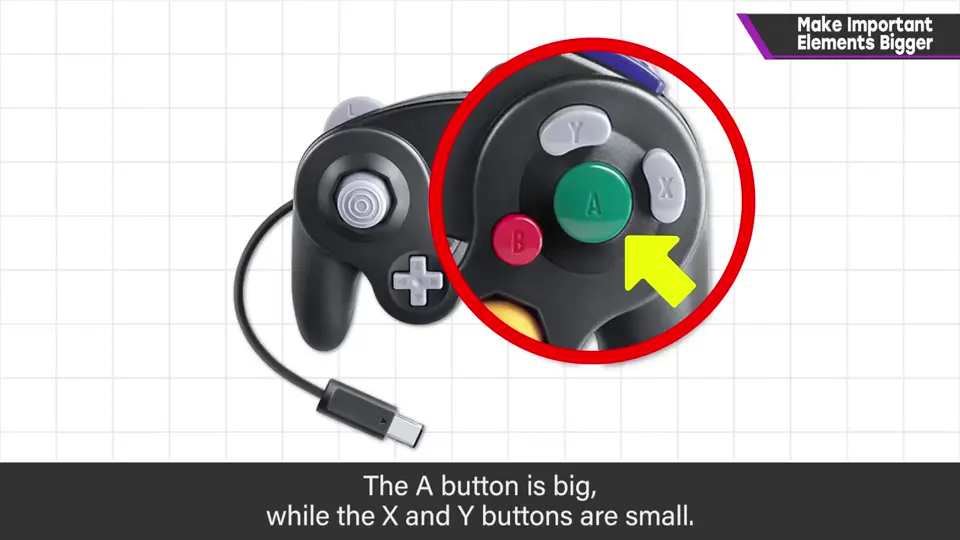
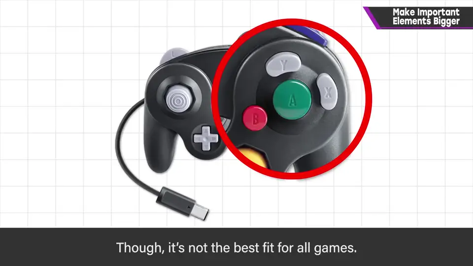
3. 并非万能 1:06
但它并不适合所有游戏，重要度因游戏而异。
- 若选项价值完全相同，加权反而难操作——例如用四个按键上下左右移动菜单时。
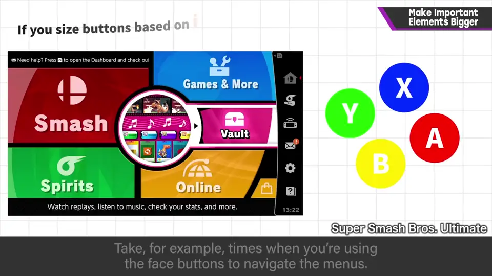
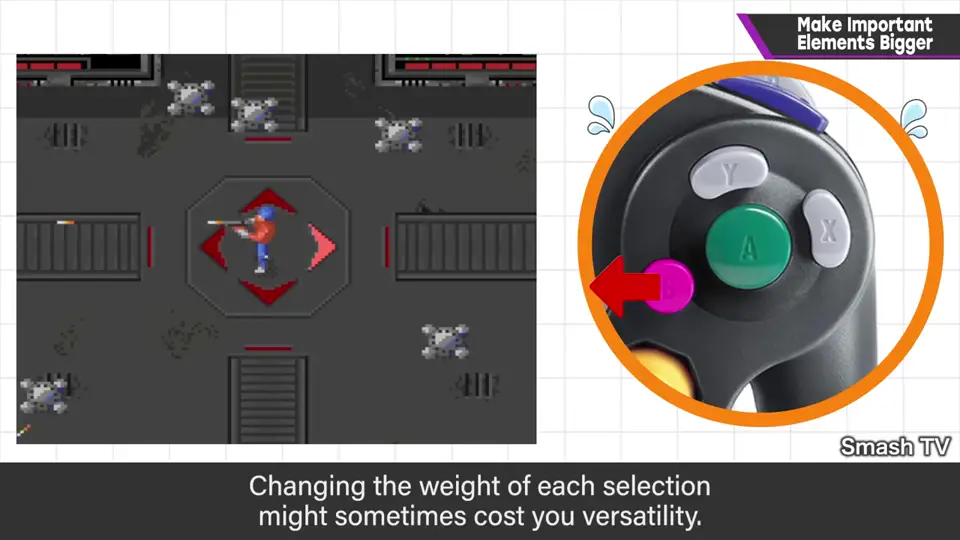
- 改变选项价值，也意味着损失通用性。
《大乱斗》的菜单是专用的，但也有相似之处。
4. 翻译的难题 1:37
菜单图标化后，翻译成其他语言时，长的语言文字容易溢出。
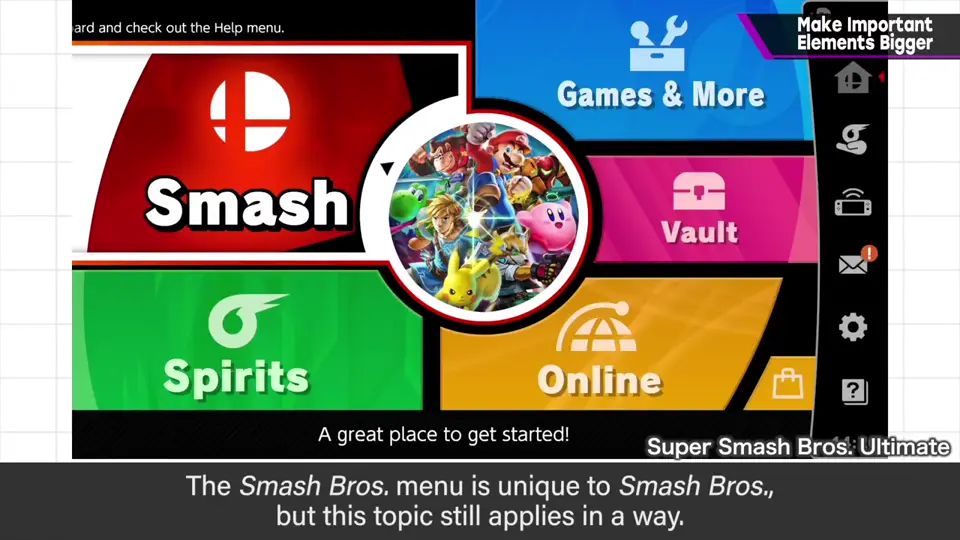
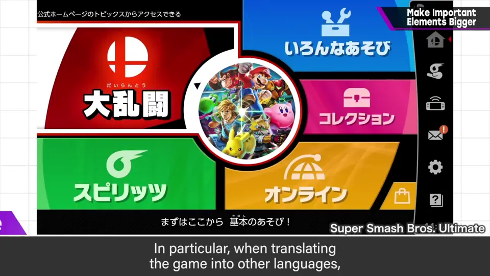
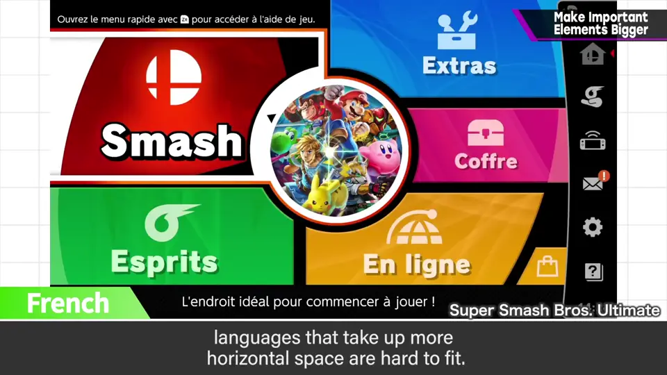
这是适合日语的版式——如果让各国的人为难了，抱歉。
5. 总结 1:59
相对于单纯列表式的菜单，还可以用改变权重的方法——这是一种介绍。
自测题
1. 樱井的菜单为什么按重要度改变图标大小？
用大小表示优先级，引导玩家访问常用/重要的模式。 0:36
2. GameCube 手柄怎样体现同样的思想？
A 键大、X/Y 键小，看和摸都知道最该按哪个。 0:54
3. 这种做法有哪些缺点？
损失通用性，选项等价时难操作；翻译成长语言时文字易溢出。 1:30